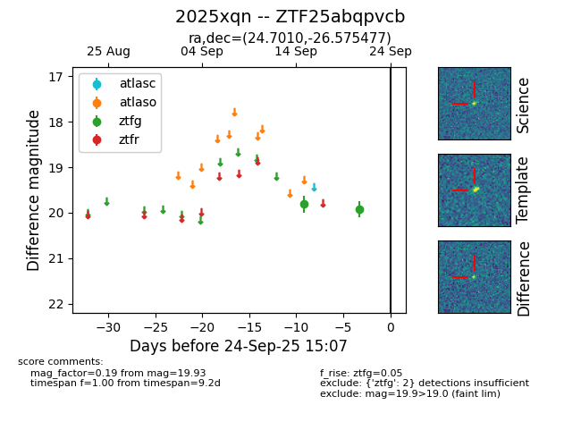

FINK: ZTF25abqpvcb
Lasair: ZTF25abqpvcb
ALeRCE: ZTF25abqpvcb
TNS: 2025xqn
YSE: 2025xqn
ZTF25abqpvcb (ztf,fink)
2025xqn (tns,yse)
equatorial (ra, dec) = (24.7010,-26.57548)
galactic (l, b) = (212.6294,-79.42470)

last ztfg=19.93
2 ztfg detections